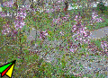

2014-2015 第二学期八年级Flash动画制作教学设计
作者：TeliuTe 来源：基础教程网
十二、学会引导层 返回目录 下一课
（一）教学设计
1、学习目标：
2、注意事项：绕过弯来，既不要跳也不要落，一楼过了二楼
3、教学过程：
1）教师准备学案和板书；
2）学生整队进入，开机抄黑板上笔记；
3）教师讲解板书演示操作；
4）学生打指法、日志、完成操作；
5）教师打勾记录学生指法成绩，检查日志和操作；
注：学生抄完笔记就开始打指法、日志，老师讲完后再继续完成；
（二）板书设计(学生笔记)
40.12学会引导层
1.添加引导层有个虚线加号
2.引导层，元件层，背景层
3.元件中心圆圈贴紧引导线
4.导入到库，再拖到舞台
操作图示：

（三）课后记
第12课 学会引导层动画p57
1.点“插入，新建图形元件，飞机”
2.返回场景，飞机补间动画
3.添加引导层，铅笔划线，对准
4.添加图层，点文件，导入到库
5.背景图层，拖到最下，拖入图片
--
2015年06月11日 星期四 19:47
--
把引导线复习一下，前面做过一个直升飞机，一个蝴蝶的
4班做的就快很多，3班前面慢，后面慢慢都做出来
--
两个没做的男生，一人一尺子惩戒一下
不管肯定不行，学生不做，自己也难受，敲一下就结束这个问题
--
画引导线时，会点到组合选项，画出来的线条是组合
这样就不能引导线，或者是加了补间动画也会形成组合图形
--
线如果画不好有断点也会出问题，删除了引导线，重新画一个
背景图层要拖到最下面，否则会挡住飞机的
--
飞机让看书上58页，学生对画画挺感兴趣的，
讲一下是几何图形，左边一个三角，右边一个，中间连一下
--
不会画的训一顿，书上看了老师讲了，还画不出来
图片前面已经用过一次，这次直接用，广阔的比较好，颜色单调内容少的大图片
--
飞机绕着飞就是对的了，学习也是要绕弯的，绕过弯就是对的
3班学生有些散漫，跟前几届相似，迟到旷课说话不做学习玩游戏这些
返回目录 下一课
本教程由86团学校TeliuTe制作|著作权所有
基础教程网：http://teliute.org/
美丽的校园……
转载和引用本站内容，请保留作者和本站链接。